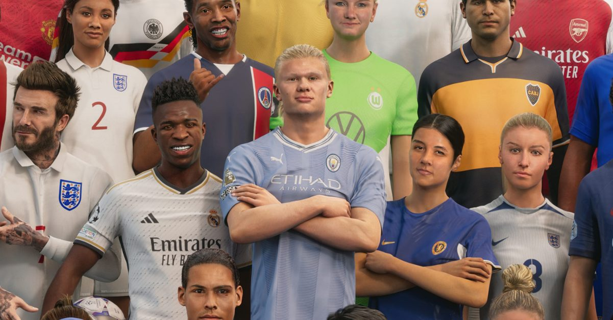
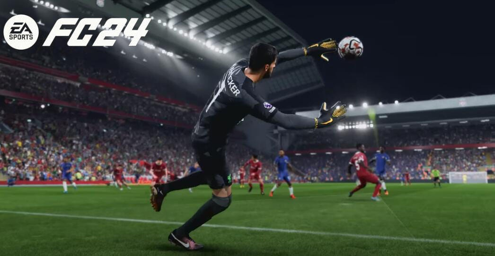
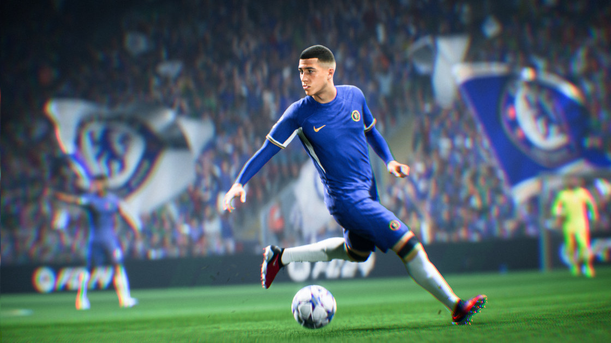
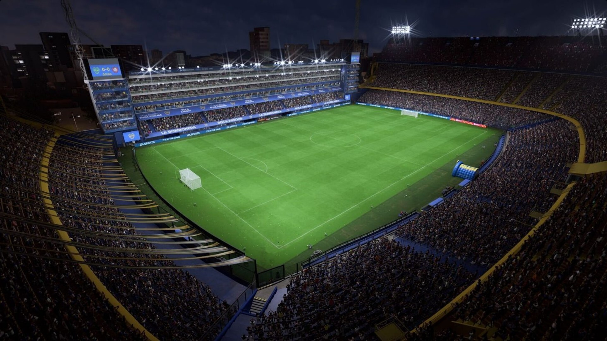

Algumas fotos:





Sobre o Jogo
EAFC 24 é o mais recente lançamento da série de jogos de futebol da EA Sports, substituindo a tradicional franquia FIFA. Desenvolvido pela EA Vancouver e EA Romania, o jogo oferece uma experiência de futebol imersiva com gráficos aprimorados e jogabilidade refinada.